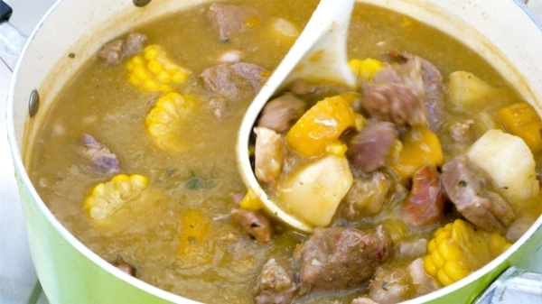

.
Preparacion...
- Sazonar la carne:Pon las carnes de res, cerdo y chivo en un bol grande.
Agrega el jugo de limón. Sazona con perejil (o cilantro), orégano,
ajo y 1 cucharadita de sal. Mezcla bien y marina
por al menos media hora, mejor una hora. - Cocinar la carne: En un caldero grande calienta el aceite a fuego alto.
Agrega la carne de res, cerdo y chivo (cuidado con salpicaduras).
Cuece hasta que doren. Agrega el resto de las carnes y el maíz.
Cuece removiendo por un par de minutos. - Añadir agua: el fuego a medio y verter ½ galón [2.5 lt] de agua.
Cocina a fuego lento hasta que rompa el hervor. - Añadir vegetales: Una vez que el agua empiece a hervir,
añade auyama, plátano picado y tubérculos (ñame, yautía, yuca).
Ralla, o raspa con el cuchillo el plátano entero para convertirlo
en pulpa, añade a la olla. - Cocinar: Cuece a fuego bajo y tapado hasta que los últimos
ingredientes añadidos estén bien cocidos, también debería
haberse espesado un poco. Si se seca demasiado, agrega
agua según sea necesario. Sazona con sal al gusto.
Retira del fuego. - Servir: con arroz blanco, aguacate, y acompaña con agrio de naranja. 
.....................................................................................................

...................................................................................................

...................................................................................................

..................................................................................................

.....................................................................................................
.....................................................................................................
.